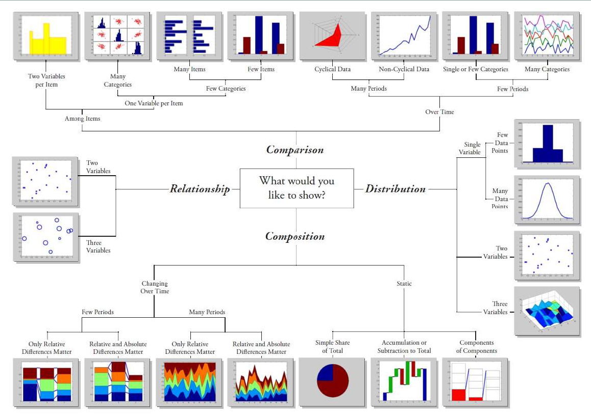
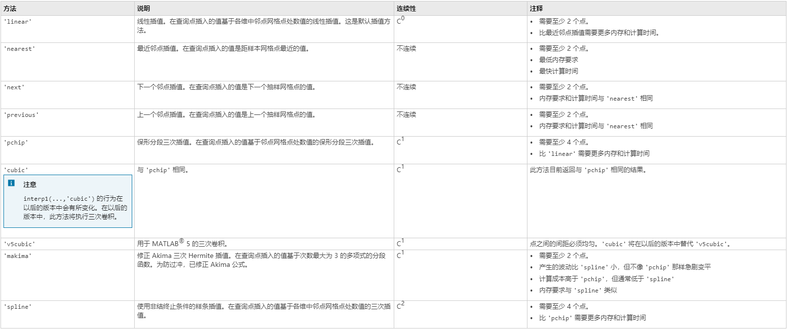
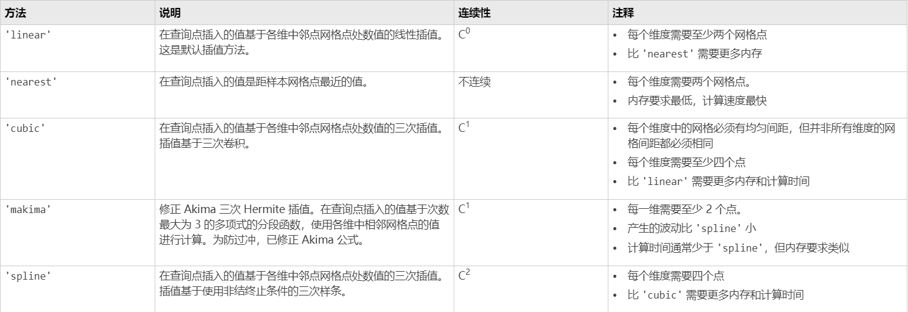

Matlab 复习
Written by SJTU_XHW
Version: Matlab R2020b
References: MATLAB Documentation (mathworks.com)
Chapter0 Matlab is a 1-index language
Chapter1 Basic Operations
1.1 operators: numerical { +-*/^() } ；logical { ~ || && > < ==（按位运算须函数） }；
1.2 variables: do not need to be declaed before assignment (类似Python)
1.3 numeric variable type：logical、char、numeric、cell、struct、scalar
1.4 constants：ans，i/j，Inf，eps（2.2204e-016），NaN，pi
1.5 keywords：iskeyword
1.6 calling priority
local variable $\gt$ built-in fuction $\gt$ subfunction $\gt$ private fuction(self defined: .mex, .p, *.m)
1.7 numeric display “format”
1 | format [options] |
short（3.1416）、long（3.1415…）、shortE（3.1416e+00）、longE（3.1415…e+00）、bank（3.14）、hex 、rat（ratio of small integers）
1.8 command line terminal
“;” at the end of a command suppresses output to the terminal.
“↑” display previous commands.
Common commands：
1
2
3
4
5
6clc; % clear command window display
clear; % remove all variables int the workspace
who % variables in the workspace
whos % variable information of the workspace
% 作用类似于Python中的语句“\”，起到过长文字换行作用
end; % 指代当前上下文中数组最后一行/列的索引
Chapter2 Array Operations
2.1 Array Definition
1 | a = [1 2 3 4]; % row vector（“，”can be omitted） |
2.2 Array Indexing
1 | A = [1, 21, 6; |
2.4 Array Concatenation
1 | A = [2 1; |
2.5 Array Manipulation
1 | A [+-*/] const % 数组[?]常数-->数组每一个元素都[?]该常数 |
2.6 Special Matrices
1 | eye(n); % n阶单位矩阵 |
2.7 Basic Functions of Matrix
1 | max(A); % 向量最大值、矩阵每一列的最大值行向量、多维数组沿第一个数组维度不为1的维度计算，将元素视为向量（这样此维度大小变为1，其他维度不变）。如果第一个数组维度=0，则返回与原数组大小相同的空数组。 |
Chapter3 Structured Programming
3.1 Flow Control
1 | % if - elseif - else |
3.2 Programming Tip: Pre-allocating Space to Variables
Tips. 提前为变量（尤其是大规模数组）分配内存空间非常必要。Matlab的数组和C++的STL容器类似，使用时会插入元素。当元素数量较多时，频繁分配空间会降低运行效率，所以提前分配好空间（已知大小/大致范围）再更改值会更好。
1 | tic % 程序改进： |
3.3 Good Habits for Script Writing
1 | % At the beginning |
3.4 Matlab Functions
方程作为一个单独脚本（*.m）存在，并且文件名必须与方程名相同；
方程文件存放位置必须位于“预设位置”/当前文件夹位置，供程序寻找；
查看内置函数方法：
edit(which('函数名.m'))方程书写规范（以mean.m为例）：
1
2
3
4
5
6
7
8
9
10
11
12
13
14
15
16
17% 文件名：mean.m
% 关键字 output(s)=FunctionName(Input(s))
function y = mean(x)
% 多参数书写方式：e.g., [a F] = acc(v2, v1, t2, t1, m)
%MEAN Average or mean value. 这里写“Online Help”，即帮助文档
% S = MEAN(X) is the mean value of the elements in X. 描述清调用方法。
% MATLAB CODES（函数实现方法）
% ...
if nargin==2 && ischar(dim)
flag = dim;
elseif nargin < 3
flag = 'default';
end
% ...方程内部预设变量
inputname：Variable name of function inputmfilename： File name of currently runing functionnargin：Number of the function input arguments（Linux shell：$#）nargout：Number of the function output argumentsvarargin：Variable length input argument list（Python：args，此处是1×n的cell）e.g.,
function y = f(x, t, varargin)varargout：Variable length output argument list
特殊函数：Function handles（类似Python、C++的匿名函数）
- Definition：
f = @(x) exp(-2*x) - Domain：this file ONLY
- Usage（example）：
x = 0:0.1:2; plot(x, f(x)); - Tips：”@”用在函数前变为函数指针，可以作为函数参数；
- Definition：
常见内置函数
x = input(prompt)：输入变量函数；mod(x, y)：等价于 x % y；num2str(A, [int precision])：将数值数组转为数字的字符数组（尤其在使用数值为绘图添加标签和标题时有用）；以下为针对numeric数组的函数
reshape(A, row, col)：将A数组的形状改为row行col列（注：item num = row*col）；linspace(x1, x2, [n])：生成x1~x2间等间距100个点，加上n参数就是n个点；logspace(x1, x2, [n])：生成$10^{x_{1}}$~$10^{x_{2}}$呈以10对数关系间距的50个点；注意：由于信号系统的方便性，惯例约定当$x_{2}=\pi$时，生成的是$10^{x_{1}}$~$\pi$的对数点；[X, Y] = meshgrid(xVector, yVector)：生成xVector和yVector交叉点网格矩阵（常用于绘制面图）；注：以下谓词函数缺省参数
isempty(A)：判空函数（是否为空，即至少一个维度为0的数组）isintegerislogicalisnanisinfisnumericisprimeisrealischarisequal：numericallyisglobal
Chapter4 Data Structure & File Access
4.1 Data Types
- 可作为1~多维数组元素的数据类型（括号内为C++对应类型）：logical，char，cell，struct，numeric：{ int8、unit8、int16（short）、uint16（unsigned short）、int32（int）、uint32（unsigned）、int64（long long）、uint64（unsigned long long）| single、double }
- 作为标量的数据类型：function handle
4.2 Numeric
- Numeric内部类型间的转换函数均为：类型名()
4.3 Char & String
- char：和C++相同，底部以数字表示，可以简单认为是ASCII对应数据（uint16），实际上支持中文
- string：与普通numeric数组相同，参与逻辑计算方式相同，同一维度可直接拼接。
- 定义方式有差异：
s = 'Example';请注意：使用单引号是char数组，双引号是string对象！！！ - 逻辑运算方式：char数组与char/char数组运算（返回与最长数组同型的logical数组）
- 重要拓展：
str(str == 'a') = 'Z';表示将所有含’a’的位置全换为’Z’（仅限str为char数组）
- 定义方式有差异：
- 相互转换函数
string(char_arr)：字符数组转stringconvertStringsToChars(string/string_arr)：字符串（数组）转字符数组（字符数组元胞）
4.4 Structure
定义、赋值：和C++不同，无需提前声明结构体的字段（fields）和数据类型，直接赋值即可
1
2
3
4
5
6
7
8
9
10
11
12
13
14% 以student结构体为例
% 第一次使用该结构体对象时，对象名即为结构体名
% 第一次定义字段时，在结构体中创建该字段
student.name = 'Alex';
student.id = '12345';
student.grade = [100, 95, 93; ...
95, 100, 91];
% 目前student既为第一个该类型结构体对象，也为该结构体类型名
% 第N（N＞1）次应用结构体类型创建新对象时，使用student(N)
student(2).name = 'Cindy';
student(2).id = '23456';
student(2).grade = []; % 略内置函数（部分见“cell类型的内置函数”）
fieldnames(struct)：返回n×1的cell数组，每列cell储存一个字段名（char数组）isfield(struct, fieldname)：检查fieldname字符数组是否为一个struct的字段名isstruct(struct)：struct、是否为一个结构体rmfield(struct, fieldname)：删除struct的fieldname字段orderfields(struct)：将struct的字段按ASCII字典序排序，返回新结构体structfun(function_handle, scalar_struct)：将函数作用于标量结构体的每个字段
4.5 Cell
定义方式（共3种，前两种也是赋值方式）：普通索引引用、元胞引用、直接书写
1
2
3
4
5
6
7
8
9
10% 普通索引（说明m×n的cell实际由1×1的cell组合而成）
A(1, 1) = {[1 4 3; 3 4 2]};
A(1, 2) = {'Anne Smith'};
% 元胞引用
A{1, 1} = [1 4 3; 3 4 2];
A{1, 2} = 'Anne Smith';
% 直接书写
A = {'Anne Smith', [1 2 3; 2 3 4]};容器的内部机理：实际上每个entry都有指向数据空间的指针，这样使得不同大小数据能存于同一个cell中
内置函数
cell2mat(cell)：将cell转为numeric数组，拼接方式按所处在cell中位置为准。注意：cell的entries必须全是numeric标量/“对应位置同型”numeric数组num2cell(A)：将数组每个元素都作为一个元胞，转换为cellmat2cell(A, dim1List, dim2List, ...)：将mat按每个维度上“元素数量划分列表“转换为cellcell2struct(cell, fields, dim)：将cell转为结构体。struct2cell(struct)：…cellplot(cell)：用figure显示cell的抽象关系iscell(cell)：是否为cell类型
4.6 Table
- 地位：精简行为的结构体，可以和*.csv、数据库等关联，数据处理中比结构体常用
- 定义：table构造函数
tb = table(record1_arr, record2_arr, ...recordN_arr, 'VariableNames', name_cell)- 其中，recond1~N_arr都应该是n×1的数组/cell，而name_cell应该是1×N的cell（表的直观印象）
- 不指定name_cell时，会按照变量名来记录
- 类型转换函数
array2table(array, 'VariableNames', name_cell);其中array支持符合形状的cell、数组等table2cell(table)：表格转cell，不包含表头
- 与结构体一样，直接访问字段名以获得数据（组）：
table.FieldName
4.7 Categorial
- 地位：类似C++的enum枚举类型，储存有限类型的数据，相较于cell类型，可以规定元素间的大小同时保留易懂的名字，同时意味着能识别相同内容、去重；
- 定义：
categorial(array)：array可以是几乎所有组：numeric array、logical array、cell array等； - 展示拥有的分类（可用于去重）：
categories(categorial_array) - 可以用于table数据类型中
4.8 File Access
- save & load：
save fileName.mat [variable(s)]; load('fileName.mat');- save未指明variable(s)，则保存全工作区变量
- 针对table的读写：writetable & readtable
writetable(table, fileName)：将表变量写入文件，支持类型：*.csv,*.txt, *.xls, *.xlsx, *.dat等tb = readtable(fileName, 'Format', '...');：从文件（支持类型同writetable）中读表变量，其中，’Format’的value是格式化字符串，指定每一字段的格式（%s字符向量，%u uint32，%f float64 双精度浮点数，与C++不同）
- 针对table的大数据量的读写：parquetwrite & parquetread（支持后缀*.parquet，snappy压缩方案）
parquetwrite(fileName, table)tb = parquetread(fileName);
Chapter5 Plotting
5.1 Basic Plotting
知识补充：Matlab中的绘图机制以面向对象为核心，并把控件对象空间包含关系看作继承关系
Figure类 ->（包含有）Axes类 -> {Line类，Text类，Surface类…}
对应：图窗对象（Figure类）、坐标轴对象（Axes类）、函数点集（Line类）、添加文字（Text类）…
常用内置变量：gca（当前正在编辑的axes对象），gcf（当前正在编辑的figure对象）
Basic Commands：基本绘图指令；以下命令默认指定当前figure、当前坐标轴等信息
line_obj = plot(x, y, 'str')：’str’={Data_markers, Line_types, Colors}[line_objs] = plot(x1,y1, str1, x2, y2, str2, ...)hold on/off：have both plots in one figurelegend_obj = legend('name1', 'name2',...)：按图线构造顺序标记title_obj = title(str)?label_obj = ?label(str)：？可取x，y，ztext_obj = text(x_pos, y_pos, LaTex_str, 'Interpreter', 'latex')：插入LaTex行公式annotation_obj = annotation('arrow', 'X', [from,to], 'Y', [from,to])：插入箭头标识
Figure Adjustment：实质是调整控件对象的属性
set(obj, ‘attrName’, attrVal)：修改对象的属性名对应的属性值get(obj)：得到对象的所有属性和对应值（字典形式，一个键值对一行）get(obj, 'attrName')：多用于获得对象的多级属性del(obj)：提前删除对应对象另外的修改属性方式：
obj_attr_dict.attrName = attrVal;（必须是对象字典才能用）- 拿到对象字典两种方式：get()/直接将对象赋给一个新变量，Matlab会给变量赋字典，而非对象本身
- Font、Font Size：一般有显示文字的控件都有此属性
- 属性名：FontName [字符数组]、FontSize [numeric]（驼峰命名）
- Line Width、Line Style：Line对象属性（可以在plot中以“Name-Value”方式指定）
- 属性名：LineWidth [numeric]、LineStyle [字符数组]
- Marker Size、Marker Colors：Line对象属性（此属性属于Marker子对象）
- 属性名：MarkerEdgeColor [同Color的类型]、MarkerFaceColor、MarkerSize [numeric]
- Axis Limit：Axes对象属性
- 属性名：XLim、YLim（、ZLim）[1×2 numeric 数组]
- Axis Label’s Name：Axes对象的二级属性
- 属性名：XLabel.String、YLabel.String（、ZLabel.String）[string对象 或 char数组]
- Tick Position：Axes对象属性
- 属性名：XTick、YTick（、ZTick）[1×n numeric 数组]
- Tick Label：Axes对象属性
- 属性名：XTickLabel、YTickLabel（、ZTickLabel）[字符数组 构成的1×n的cell，标量numeric数组也可，底层会转换mat2cell、num2str]
- 注：在此属性中，‘p’字符指代了$\pi$字符
- Color：大部分对象都具有此属性
- 属性名：Color [字符数组（颜色字母/十六进制字符）/ 1×3 numeric数组（RGB矩阵）]
Multiple Figures：多图窗使用（position参数不常使用，略）
- 主动创建：
fig_obj = figure('Name', '标题名称', 'NumberTitle', '窗口自动编号：on/off'); - 切换到指定窗口作为当前编辑窗口：
figure('Name'或Number（自动编号开启时）);
- 主动创建：
Several Plots in One Figure：子图使用
- 切换到指定子图（同时就是创建）：
subplot(m, n, N);：m总列数，n总行数，N按行编号的子图
- 切换到指定子图（同时就是创建）：
Axis State Adjustment：坐标轴状态调整（关键字法）
axis/box/grid off/onaxis normalaxis square：坐标轴显示部分呈正方形axis equal：横纵（竖）轴标度相等（数据-长度比例对应）axis equal tight：使坐标轴limit适配数据最值axis ij：坐标轴原点置于左上角axis xy：坐标轴原点置于左下角
5.2 Advanced Plotting
Purpose versus Type

Commands: Global Color Adjustment
colormap(RGBMatrix/Built-in-Name)：指定RGB矩阵作为当前配色方案（适用于所有含有闭合面积的图像中）；内置名”jet”, “hot”, “cool”, “gray”, “winter”, “summer”, “autumn”, “parula”, “prism”；colorbar('southoutside')：在规定位置显示颜色-值条；
Commands: Analysis Gragh
loglog(...)：作双对数轴图；参数使用方法几乎完全与plot相同；semilogx(...) & semilogy(...)：作单对数轴（含有的字母即为对数轴），参数方法同上；yyaxis left/right;：关键字方法，声明使用双y轴，此命令可以切换当前编辑的y轴；histogram(X, nbins/edges)：绘制频度直方图（nbins指定分块数量，edges向量指定边缘，边缘包含左边，不包含右边，末尾分组两边都包含；当不填nbins、edges时自动调整）histogram(CategorialArray, nbins/edges)：为分类数组统计直方图直方图（histogram）对象较于前面的Line对象的属性有所不同（以下列举属性名，提示：属性可以用到时，再在程序中disp查询，下略：
- Data：直方图源数据；
- NumBins、BinWidth：实际分段数、实际分段宽度；
BinLimits：[1×2 numeric数组] 实际的分块边界数组；
Values：[1×n numeric数组] 直方图的分段数据，可以用来数据分段；
- FaceColor、EdgeColor：[类型同Color] 直方图的面颜色、边缘颜色；
bar(Y, ['stacked'])：Y为向量：为每一个元素创建一个条形，高度为其值，横轴名称为排名数字；Y为矩阵时，一列作为一类数据，一行数据作平行比较，最后一个参数指明是否以堆栈形式显示；bar(ticks_arr/categorial, Y, ['stacked'])：作用同上，第一个参数指定横轴（categorial数组可以从大到小匹配、普通数组/字符数组cell只能按索引对齐）；bar3(...)：参数同bar，只是将前面的一行平行比较的数据拉到另一个维度比较，支持 ‘group’、‘stacked’参数；barh(...)：参数类同bar，只是将图数据展示在水平方向上（horizontal）pie(X/categorial, [explode], [labels])：X为一维向量/分类数组（sum(X)＜1，值即面积，展示一部分；sum(X)＞1，面积为比例）；explode为同型向量，指明裂开的部分；labels也为同型向量，可以给定名称；polar(thetaVector, RVector)：作极坐标图；stairs(y)：台阶图；stem(y)：枝干图；boxplot(x, [labels], ['Notched', 'on'])：箱线图（含中位数、上下四分位数、离群值显示），可以指定是否为缺口箱线图，labels可以是字符数组cell，也可以是数组；errorbar(x, y, err)：误差线图；imagesc(matrix)：平面颜色显示矩阵值；
Commands: 3D Plot
plot3(x1, y1, z1, ..., xN, yN, zN, ...)：”Name-Value”参数几乎与plot相同（参数方程、普通方程皆可）；mesh(x, y, z) & surf(x, y, z)：都能绘出3D网状图，不过mesh是网格（FaceColor透明），surf是平面（FaceColor不透明，可以指定EdgeColor透明）；[C, h] = contour(x, y, z)：基于立体图生成等高线图（参数几乎同mesh、surf）；返回两个参数，第一个为绘制点集，第二个为对应高度数组；clabel(C, h)：专门对等高线图标记的命令；
[C, h] = contourf(x, y, z)：上色的等高线图；meshc(x, y, z) & surfc(x, y, z)：组合等高线图的surf和mesh；[X, Y, Z] = sphere(R)：生成球；
Chapter6 Numeric Differentiation & Integration
6.1 Polynomial Function
- 多项式表示法：行向量（最后为$x^{0}$项系数，从右向左一次递增，不得省略）:$9x^{3}+3x+7$ => [9,0,3,7]；
- 多项式求值：
y = polyval(pVector, x)：求多项式在x数组每个元素上的值； - 多项式求导：
yd = polyder(pVector)：对多项式关系式求导； - 卷积与多项式乘法：两个向量的卷积与这两个向量对应的两个多项式乘积结果对应向量相等
conv(pVector1, pVector2)：两个向量的卷积（两个多项式乘法）
- 多项式积分（含初值）：
polyint(pVector, f(0))；给定的f(0)即为多项式常数； - 多项式求根：
roots(pVector);
6.2 Numerical Differentiation（数值微分）
- 一阶差分运算
diff(vector)：计算vector相邻元素之差的向量（返回少一个元素个数的差分向量）； - 一阶数值微分近似计算：只要差分运算的向量元素间足够接近，则差分可以对函数微分作近似数值计算；
- 举例：
x = 0:0.05:pi; y = sin(x); m = diff(y)./diff(x);则m向量为各个点间的导数值点； - 注意：求导的结果向量比输入向量少一个元素，记得绘图时舍弃一个点再绘图；
- 举例：
- 高阶数值微分近似计算：多个微分共用x向量；
6.3 Numerical Integration（数值积分）
Midpoint Rule（中间点积分法）：$\int_{a}^{b}{f(x)dx}\approx h\sum_{i=0}^{n-1}f(x_{i})$
1
2
3
4
5
6
7
8
9
10% 以sin(x)从0~1的近似数值积分为例
a = 0; b = 1; bins = 500; s = 0;
for i = (b-a)/(2*bins):(b-a)/bins:(1-(b-a)/(2*bins))
s += sin(i);
end
s *= (b - a) / bins;
% 以上过程可以用sum()更快：
midP = (x(1:end-1)+x(2:end))./2;
y = sin(midP); s = sum(y * (b-a)/bins);
% s 即为所求Trapezoid Rule（梯形法则/梯形积分法）：$\int_{a}^{b}{f(x)dx}\approx h[f(a)+f(b)+\dfrac{1}{2}\sum_{i=1}^{n-1}{f(x_{i})}]$
1
2
3
4
5
6
7
8% 以sin(x)从0~1的近似数值积分为例
a = 0; b = 1; bins = 500; s = 0;
s += sin(a) + sin(b);
for i = (b-a)/bins:(b-a)/bins:(1-(b-a)/bins)
s += 0.5 * (sin(i));
end
s *= (b - a) / bins;
% s 即为所求也可使用：
s = h * trapz(y);其中h为y的取点间隔；Simpson’s Rule（辛普森法则/辛普森积分法）：$\int_{a}^{b}{f(x)dx}\approx \dfrac{h}{3}[f(a)+f(b)+4\sum_{i=1}^{2n-1}f(x_{i})+2\sum_{i=2}^{2n-2}f(x_{i})]$
1
2
3
4
5% 以sin(x)从0~1的近似数值积分为例
a = 0; b = 1; bins = 500; s = 0;
x = a:(b-a)/bins:b; y = sin(x);
s = (b-a)/(3*bins)*(y(1)+y(end)+2*sum(y(3:2:end-1))+4*sum(y(2:2:end-1)));
% s 即为所求包装好的数值积分函数
- 辛普森法：
quad(function_handle, x_start, x_end); - 一阶数值积分
integral(function_handle, x_start, x_end); - 二阶数值累次积分：
integral(function_handle, x_start, x_end, y_start, y_end); - 三阶数值累次积分：
integral3(function_handle, x_start, x_end, y_start, y_end, z_start, z_end); - 注：重积分仅介绍符号运算，见符号运算章节
- 辛普森法：
Chapter7 Equation(s) Solving & Symbolic Approach
7.1 Symbolic Representation
Matlab 中的新数据类型：sym符号类型，可以组成sym数组；
定义的：
syms x y(x);中x是sym类型，y是symfun类型；等式sin(x) == y也是symfun类型，条件y(0) == 1也是symfun类型；多个表达式conds = [x == 0, y(1) == 0];的conds是1×2 symfun数组；
- Symbolic Variables Definition（Independent）：
syms a b c...; 或 sym('x'); Symbolic Variables Definition（Dependent，常用于解方程中）：
syms z(x, y);Symbolic Beautify：
pretty(sym_expr)- 具体值代入符号：
subs(sym_expr, [target_var], value);，当sym_expr为单变量时，target_var可省略
7.2 Symbolic Plotting
fplot(function_handle, [left, right], Name-Value)：按符号绘图；fplot3、fsurf、fcontour：同理
7.3 Symbolic Differentiation & Integration
- Symblic Differentiation：
fprime = diff(sym_expr, [arg_sym, n])：对于自变量arg_sym的n阶导数，允许计算偏导数，sym_expr为符号表达式； - Symbolic Integration（Indefined Intergration, 但默认简单的初值）：
fs = int(sym_expr, [arg_sym]); - 重积分（几重添几个int，右边以二重积分为例）：
int(int(sym, arg), arg) - 注：无法求解符号积分时，请使用“数值积分”求近似数值；
7.4 Normal Equation(s) Solving: Root Finding
友情提示：线性方程组可以使用矩阵求解、多项式请用6.1的roots命令，可能更快
数据类型提示：无论是这里的solve，还是接下来的dsolve，如果求解有多个结果/变量，返回结果是sym结构体，使用：结果变量.sym_name获得对应sym_name的解析式；
求解符号方程：
S = solve(eqn, target_var)；求解符号方程组（传入eqns、target_vars为sym数组）：
S = solve(eqns, target_var/target_vars)；注：无法求解符号方程时，先绘图找到大致范围，使用数值近似解
V = vpasolve(eqn, target_var, [left, right]);解不等式（组）：语法与上述相同，只是解S的结构不同：有parameters（结果是范围，参数方程）、conditions（不等式解）等；
7.5 Differential Equation(s) Solving
注：纯积分方程可以在7.4中由solve求解；微分、微积分方程可由本部分的dsolve求解。
求解符号微分方程：
S = dsolve(eqn, cond)举例：
dsolve(diff(y, t, 2) == a*y, [y(0) == 5, subs(diff(y, t), t, 0) == 1]);是给定初值的微分方程：$\dfrac{d^{2}y}{dt^{2}}=ay,\quad y|_{t=0}=5,\quad \dfrac{dy}{dt}|_{t=0}=1$ （其中a为常数）的解
Chapter8 Linear Algebra Tools
- 矩阵用于求解线性方程组：结合”Array Operations“和线性代数知识即可，略；
提示：运行后面的矩阵操作前，建议运算这三个参数以评估矩阵的状态
知识补充：矩阵A条件数$\kappa(A)$用于衡量线性方程$Ax=b$的稳定程度，表征系统解$x$在参数A受扰动时是否会受到剧烈影响的情况。数学证明$\kappa(A)=\dfrac{\sigma_{max}}{\sigma_{min}}$，可以认为“构成A的数据组向量两两间越接近共线，即越线性相关，A越易受到扰动”，此类扰动容易导致LU分解的数值不稳定、方程解不稳定。（条件数越小越稳定）
- 求逆、求秩、求条件数$\kappa$：
inv(matrix)、rank(matrix)、cond(matrix) - Gaussian Elimination（使用初等行变换）：
R = rref(matrix); - LU Factorization：
[L, U] = lu(matrix); - LUP Factorization：
[L, U, P] = lu(matrix); - Cholesky Factorization：
U = chol(matrix);
知识补充：矩阵LU分解可用于：求线性方程组、求逆矩阵、求行列式
使用LU分解条件：满秩方阵A
警告：数值不稳定，一般改用LUP分解：$PA=LU$，或者在A为对称正定阵时，使用Cholesky Factorization（LU分解的特例、变形：$A=U^{T}U$），实现数值稳定
LU分解操作方法：A通过左乘若干初等矩阵得到上三角矩阵U，左边的初等矩阵组合一定为下三角矩阵L（也可以将左边矩阵移动到等式右边，再把这个新的下三角矩阵称为L）
LU分解法求线性方程组：$L\underbrace{Ux}_{y}=b$
LU分解法求逆矩阵：$A^{-1}=U^{-1}L^{-1}$
LU分解求行列式：$|A|=|L||U|$
- QR Decomposition：
[Q, R] = qr(matrix);
知识补充：矩阵正交三角形（QR）分解，求一般矩阵全部特征值的最有效并广泛应用的方法。
- SVD（Singular Value Decomposition）：
[U, S, V] = svd(matrix);
知识补充：矩阵奇异值分解（SVD），相较于普通方阵A可以实现的特征分解（$A=W\Sigma W^{T}$），非方阵A也可以由数学证明，按特征值分解为：$B=U\Sigma V^{T}$，其中$U$是$AA^{T}$方阵的特征向量张成矩阵，这些特征向量称左特征值向量；$V$是$A^{T}A$方阵的特征向量张成矩阵，这些特征向量称右特征向量（不难得出U、V为正交阵）；$\Sigma$为奇异值在对角线排列的矩阵，由数学证明，奇异值是特征值的平方根。
较繁，求解方法请参考各个线性代数书籍。
包装好的求特征值和特征向量：
[V, D] = eig(matrix);- 其中V为特征值在对角元的对角矩阵；D为对应位置的特征向量张成的矩阵；
矩阵指数（Matrix Exponential）：
Y = expm(matrix);
矩阵指数的意义：www.bilibili.com 搜索“矩阵指数”-3Blue1Brown
简单认为：应用层面上有助于解决线性微分方程组
类似于$\dfrac{d}{dt}y=ry$的解是$y=r_{0}e^{rt}$，理解为“如果y增长率为自身的r倍，则y是变化因子$e^{rt}$作用于初值$r_{0}$得到的结果”，$\dfrac{d}{dt}\begin{bmatrix}x(t)\\y(t)\end{bmatrix}=\begin{bmatrix}a & b \ c & d \end{bmatrix}\begin{bmatrix}x(t)\\y(t)\end{bmatrix}$表示向量$\begin{bmatrix}x(t)\\y(t)\end{bmatrix}$在空间中的变化率为初值$\begin{bmatrix}x(0)\\y(0)\end{bmatrix}$在增长因子$e^{\begin{bmatrix}a&b\\c&d\end{bmatrix}t}$作用下的结果：$\begin{bmatrix}x(t)\\y(t)\end{bmatrix}=\begin{bmatrix}x(0)\\y(0)\end{bmatrix}e^{\begin{bmatrix}a&b\\c&d\end{bmatrix}t}$
结论：$\dfrac{d}{dt}\overrightarrow{v(t)}=M·\overrightarrow{v(t)}$ 的解是：$\overrightarrow{v(t)}=\overrightarrow{v_{0}}·e^{Mt}$，其中M为与$\overrightarrow{v(t)}$同维的矩阵，$e^{M}$计算方法是其定义：代入“泰勒级数”：$e^{Mt}=E+Mt+M^{2}\dfrac{t^{2}}{2!}+…+M^{n}\dfrac{t^{n}}{n!}+…$.
Chapter9 Statistics & Data Analysis
9.1 Desciptive Statistics
最大值、最小值：
max(...)、min(...)（前面介绍过）平均数、中位数、众数：
mean(A, ['all' / dim])、median(...)、mode(...)（后面两个参数同mean，之前介绍过）分位数：
prctile(X, p, ['all' / dim])，其中p∈[0, 100]，函数对X为向量、矩阵、多维数组时的行为和前面的函数一样；标准差、方差：
s = std(X); v = var(X);同理数据偏度（skewness）：
y = skewness(X);知识补充：数据偏度衡量数据概率密度分布的偏移程度，定义为样本三阶标准化矩：$Skew(X)=E[(\dfrac{X-\mu}{\sigma})^{3}]$当 平均数＜中位数＜众数时，数据分布为“左偏分布”（Left-Skewed，但图形上向右倾斜，Skewnewss＜0）；当众数＜中位数＜平均数时，数据分布为“右偏分布”（Left-Skewed，但图形上向左倾斜，Skewnewss＞0）；正态分布为标准的“对称分布”，偏度为0.
数据峰度（Kurtosis）
y = kurtosis(X);知识补充：数据峰度表征概率密度分布在平均值处峰值高低大小（也反映了分布曲线顶部的“尖锐程度”），定义为样本四阶标准化中心矩：$Kurt(X)=E[(\dfrac{X-\mu}{\sigma})^{4}]$；相对于正态分布（Kurt=3），Kurt＜3时，瘦尾分布；Kurt＞3，厚尾分布。
9.2 Inferential Statistics
- 常用函数
rand：返回X~U(0,1)时随机变量X的任意值；rand(n)：n×n的矩阵，每个元素都是rand计算出的，相互独立；rand(dim1, dim2, ...)：生成多维随机矩阵（服从(0,1)均匀分布）；randi(imax, n, [className])：生成1~imax间均匀分布的伪随机数，可指定numeric类型；randi(imax, dim1, dim2, ..., [className])：同理；randn(n)：生成n×n矩阵，元素服从标准正态分布；randn(dim1, dim2, ...)：同理；normrnd(mu, sigma, dim1, dim2, ...)：生成规定大小随机矩阵，服从N(mu, sigma^2)；exprnd(mu, dim1, dim2, ...)：生成规定大小随机矩阵，服从均值为mu的指数分布；
此章节等复习了概率论与数理统计再补充
Chapter10 Curve Fitting & Interpolation
概念辨析：拟合方法包括回归、插值、逼近等，本章介绍回归和插值
插值一定会通过所有数据观测点，但回归不一定
10.1 Simple Linear Regression: 单变量线性回归（最小二乘法）
- 前提：在一组收集的数据中假设x-y线性相关，满足：$\hat{y_{i}}=\beta_0+\beta_1x_i$
- 最小二乘法（Least-squares Solution）原理：使平方和误差（Sum of Squared Errors，SSE）最小，即$SSE=\sum\limits_{i}\epsilon_i^2=\sum\limits_i(y_i-\hat{y_i})^2=\sum\limits_i(y_i-\beta_0-\beta_1x_i)^2$最小，求偏导、极值得结论；
多项式曲线拟合：
pVector = polyfit(xList, yList, order);其中order为指定拟合多项式的阶数；- 可以使用双输出参数：
[pVector, S] = polyfit(...);，使用结构体S以便进行误差分析：[y_fit, delta] = polyval(pVector, x, S);，其中，95%预测区间为：y_fit ± 2*delta.
- 可以使用双输出参数：
散点图（除了plot/plot3作散点，此方法也可）：
scatter(x, y)、scatter3(x, y, z);- 散点常用后缀参数：“filled”，可使散点实心显示；
变量线性相关性（correlation coefficient, 即最小二乘法中的“r值”，-1 ≤ r ≤ 1）：
corrcoef(x, y);- 注：通过数学处理，也可以解决大部分单变量非线性回归问题，例如拟合假设 $\hat{y}=b+alnx$ 可以将数据集x替换为lnx，继续进行线性拟合.
10.2 Multiple Linear/Non-Linear Regression: 多变量（非）线性回归
多元线性回归拟合：
[b, bint, r, rint, stats] = regress(y, X, [Alpha]);y：模型观测值（响应值）；
X：模型输入矩阵，要求第一列必须为全1列（以便软件处理模型常数）、接下来几列每列分别存放各个预测因式（不是自变量！！！）参数的取值向量（与y位置对应）
- 预测因式：假设拟合的表达式为：$\hat{y}=\beta_0+\beta_1x_1+\beta_2x_2^2+\beta_3x_1x_2$，则预测因式为：$x_1$、$x_2^2$、$x_1x_2$，X矩阵应该是：
X = [ones(length(X1)) X1 X2.^2 X1.*X2];
- 预测因式：假设拟合的表达式为：$\hat{y}=\beta_0+\beta_1x_1+\beta_2x_2^2+\beta_3x_1x_2$，则预测因式为：$x_1$、$x_2^2$、$x_1x_2$，X矩阵应该是：
Alpha：显著性水平，用于设定100*（1-Alpha）%置信水平，默认0.05；
b：对应于X中预测因式的拟合系数组成的向量；
bint：系数估计值95%置信区间的矩阵（n(b)×2数组，每行表示该拟合点置信边界的上、下界）；
r：拟合-实际点对应残差向量；
rint：用于诊断离群值的区间（n(X)×2数组，每行表示该观测点的离群区间，如果这个区间不包含0，则对应残差在置信区间之外，是离群值）
stats：拟合评估向量 $[R^2, F, p, est]$
非线性回归拟合：
beta = nlinfit(X, Y, modelFunc_handle, beta0); 或使用工具cftool();nlinfit原理：迭代最小二乘法估计
X、Y为数据列表，modelFunc_handle为模型函数指针，beta0为合适的迭代初值
modelFunc如何找，需要对数学模型非常熟悉，按曲线变化类型一个个试；
如何得到合适的beta0？
目标：越接近真实情况的参数越好（估计实际情况下模型参数大致是多少）
法1：目测观测点估计法；
法2：代入几个数据点，使用solve/dsolve解出大致参数；
法3：在评估真实参数大致范围（越小越好）后，使用随机数生成；
10.3 Common Interpolation
以下两个插值函数都具有外插值默认值，针对不同method有不同赋值方式，只需在method后给定默认外插值即可；
提示：可以对灰度图像矩阵进行插值；
- 一维数据插值（表查找）：
vectorQuery = interp1(x, y, xQuery, method);- x：样本点；y：样本点对应观测值；
- xQuery：查询点（一般查询内插值点）；
- vectorQuery：查询结果值（估计）；
- method：插值方法

注：method=’pchip’等价于命令pchip(…), Piecewise Cubic Hermite Interpolating Polynomial; method=’spline’等价于命令spline(…), Cubic spline data interpolation;
补充相关函数：分段多项式（piecewise polynomial）
- 生成分段多项式：
pp = mkpp(breakPointsV, pVectors);（其中pp为结构体，可以被ppval读取） - 分段多项式的值：
v = ppval(pp, x); - 直线绘制：
line_obj = line([x_s, x_e], [y_s, y_e], [LineSpec]);- 用于绘制断点x=x0处的垂直虚线：
line([x0, x0], ylim或get(gca).YLim, '--');
- 用于绘制断点x=x0处的垂直虚线：
- 生成分段多项式：
二维数据插值：
vQuery = interp2(X, Y, Z, XQuery, YQuery, method);- X、Y、Z对应二维数据点及其值，XQuery、YQuery为内部查询点，vQuery为查询值；
- 同时支持高维数组填充插值：
Mq = interp2(M, k);在每维度M的样本间分割k次插入值； - method：插值方式

 wechat
wechat alipay
alipay